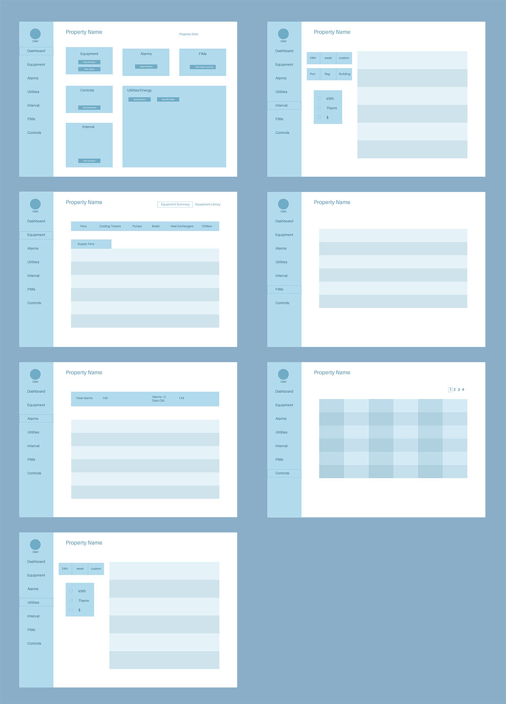
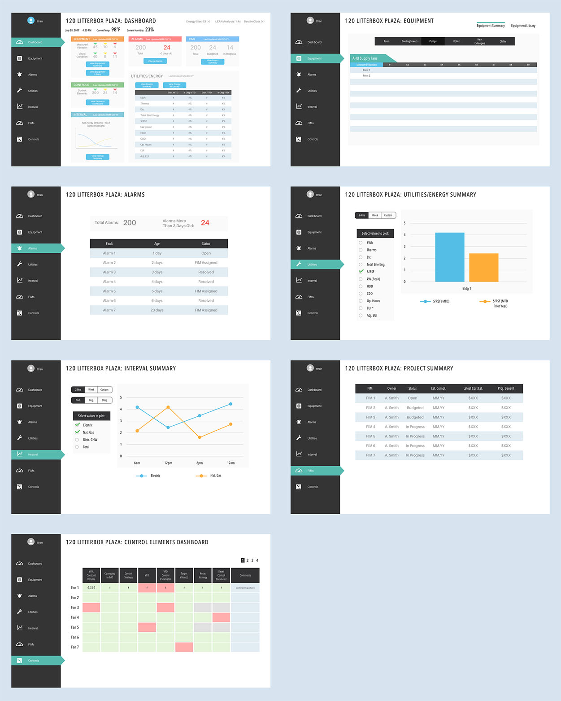
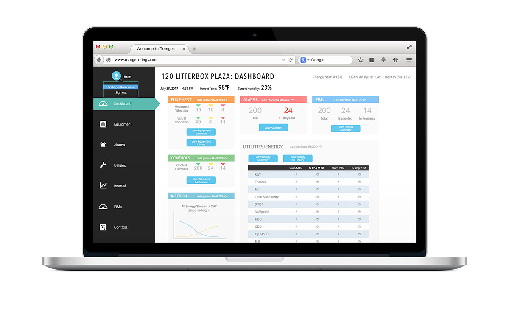

Project Overview
Instead of having a building automation control system where users can change the operational settings, one of our real estate clients wanted a just a view-only dashboard. However, the dashboard would also contain a section where they can do some bookkeeping and a functionality to upload important documents pertaining to the facility.
Goals
I spearheaded this project as the UI lead, communicating with the clients every week about further developments for their facilities. Because this is unlike the other products we’ve built in the past, I had to build out unique features tailored to this client. My goal was to come up with a design that was efficient for the client to their recording.
I rehashed the client's barebones mockup and created a wireframe showing the screens in detail.
With the UI team and clients, we went over my lo-fi mock-up and worked out the kinks together. The entire process was long and iterative, as they constantly wanted to change up some of the requirements on the spot. After feeling like I had enough data, I received their permission to start creating a higher quality version to further show the look and feel. I also created an InVision prototype so that the front end engineers had something to work with.
I chose to go with a white UI because it felt like a more natural environment for users to type data in. I stayed away from warm colors because a lot of them were already being used in depicting statuses.
I chose to go with a white UI because it felt like a more natural environment for users to type data in.
The Challenge
The most difficult part of this project was definitely trying to communicate our process to our clients. We walk them through our process, talking about mockups and prototypes, and deadlines. When I sent them a PDF version of the high fidelity mockups, they thought that those were screenshots of their site. Normally when misunderstandings like this happen, we congregate as with our teams, VP, and clients to further discuss the expectations and resources. Our clients sometimes don't understand the approach and methods of our scope, so we have to make sure that we walk them through each step of the process as we present the different phases.
I created two prototypes: one using InVision for the engineers and a DGLux5 version for the client. We weren't using live data as there weren't any coming in yet, but we gave clients access to the software so they can learn how to use it.
The final high fidelity mockup that was handed off to the engineering team.
The Results
While the process was rocky with some misunderstandings along the way, it brought some good news in the end. The clients loved the design so much that they wanted to use this UI for all of their properties to some extent. This meant that over 30 properties will be using my design for their building automation needs. It locked Controlco in with more guaranteed projects.